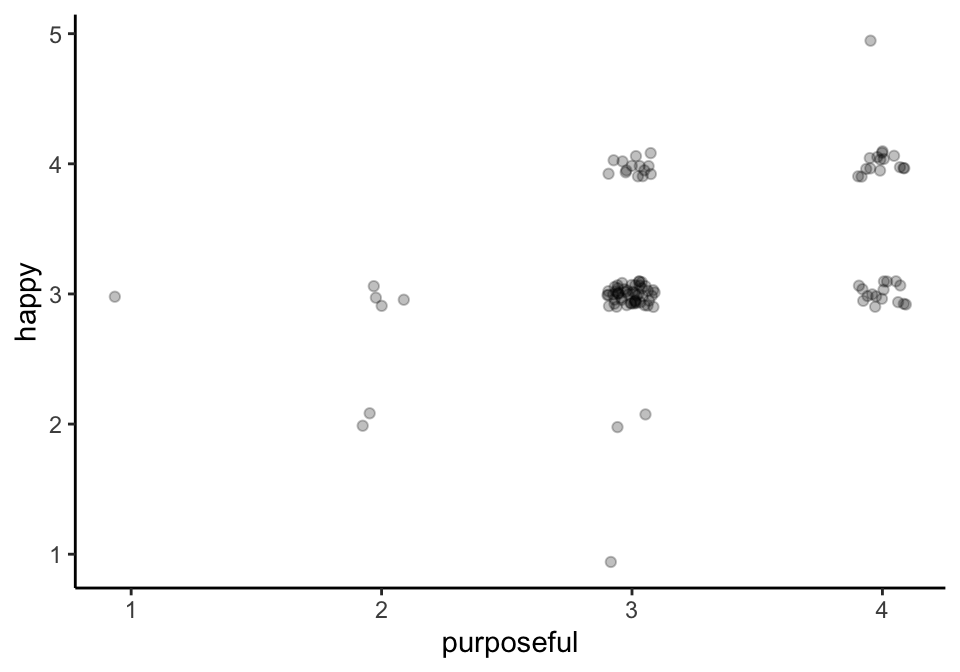
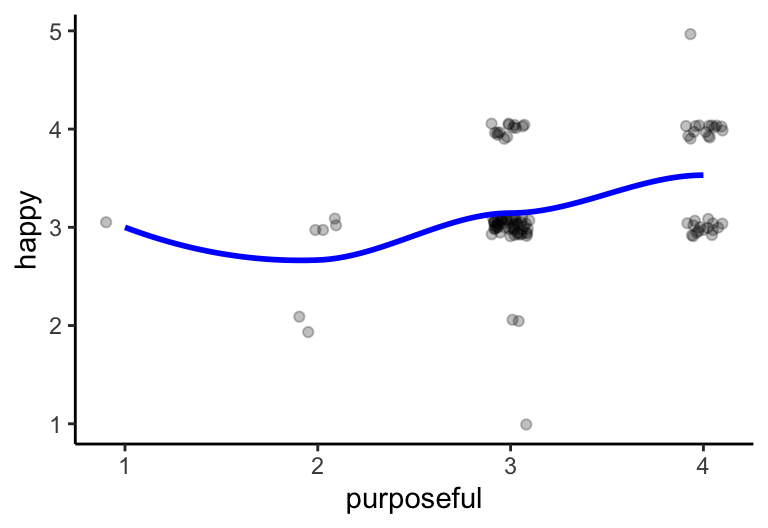
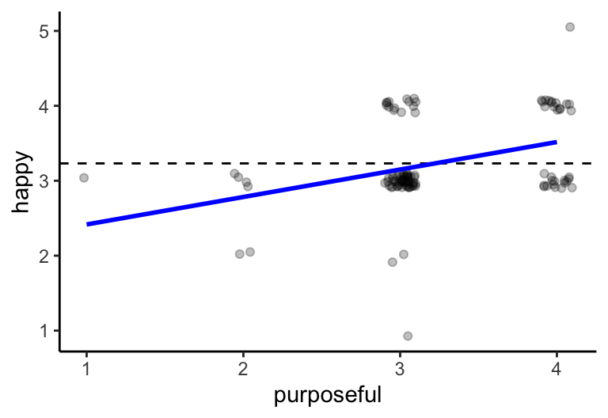
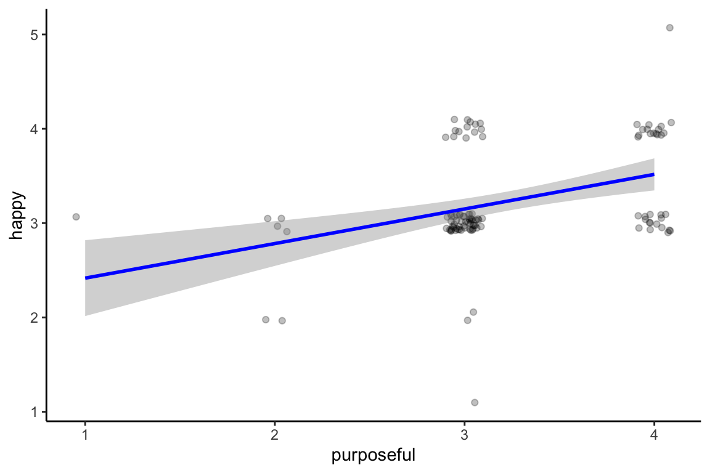

We’ll loop back to scales after talking about some geoms
It’s not possible to go through all the possible geoms (that’s what the rest of the class is for!)
We’ll focus on some basic ones for now
geom_point()
geom_jitter()
geom_smooth()
geom_hline() / geom_vline()
geom_bar()
geom_boxplot()
geom_density()
geom_histogram()
Geoms: geom_point()
Your basic scatterplot!
ipcs_data %>%filter(SID =="216") %>%ggplot(mapping =aes(x = purposeful , y = happy )) +geom_point() +theme_classic() # I just hate grey backgrounds
Geoms: geom_point()
Your basic scatterplot!
ipcs_data %>%filter(SID =="216") %>%ggplot(mapping =aes(x = purposeful , y = happy , color = happy )) +geom_point() +theme_classic() # I just hate grey backgrounds
Geoms: geom_point()
Your basic scatterplot!
ipcs_data %>%filter(SID =="216") %>%ggplot(mapping =aes(x = purposeful , y = happy , color = happy )) +scale_color_continuous(type ="viridis") +geom_point() +theme_classic() # I just hate grey backgrounds
ipcs_data %>%filter(SID =="216") %>%ggplot(mapping =aes(x = purposeful , y = happy , color = happy )) +scale_color_gradient(low ="red", high ="blue") +geom_point() +theme_classic() # I just hate grey backgrounds
Geoms: geom_jitter()
Sometimes we have data that have lots of repeating values, especially with ordinal response scales where the variables aren’t composited / latent
jitter adds random noise to the point to allow you to see more of the points
ipcs_data %>%filter(SID =="216") %>%ggplot(mapping =aes(x = purposeful , y = happy )) +geom_jitter() +theme_classic() # I just hate grey backgrounds
This may be too much jitter
Geoms: geom_jitter()
Sometimes we have data that have lots of repeating values, especially with ordinal response scales where the variables aren’t composited / latent
jitter adds random noise to the point to allow you to see more of the points
ipcs_data %>%filter(SID =="216") %>%ggplot(mapping =aes(x = purposeful , y = happy )) +geom_jitter(width = .1, height = .1) +theme_classic() # I just hate grey backgrounds
Geoms: geom_jitter()
alpha
Alpha can help us understand how many points are stacked when using jitter (or other overlapping data)
ipcs_data %>%filter(SID =="216") %>%ggplot(mapping =aes(x = purposeful, y = happy)) +geom_jitter(width = .1 , height = .1 , alpha = .25 ) +theme_classic() # I just hate grey backgrounds

Geoms: geom_smooth()
geom_smooth() allows you to apply statistical functions to your data
There are other ways to do this that we won’t cover today
Core arguments are:
method: “loess”, “lm”, “glm”, “gam”
formula: e.g., y ~ x or y ~ poly(x, 2)
se: display standard error of estimate (T/ F)
aes() wrapped aesthetics or directly mapped aesthetics
Geoms: geom_smooth()
Remember: it’s a LAYERED grammar of graphics, so let’s layer!
method = "lm"
ipcs_data %>%filter(SID =="216") %>%ggplot(mapping =aes(x = purposeful, y = happy)) +geom_jitter(width = .1, height = .1, alpha = .25) +geom_smooth(method ="lm" , formula = y ~ x , se = F , color ="blue" ) +theme_classic() # I just hate grey backgrounds
method = "loess"
ipcs_data %>%filter(SID =="216") %>%ggplot(mapping =aes(x = purposeful, y = happy)) +geom_jitter(width = .1, height = .1, alpha = .25) +geom_smooth(method ="loess" , formula = y ~ x , se = F , color ="blue" ) +theme_classic() # I just hate grey backgrounds
Warning in simpleLoess(y, x, w, span, degree = degree, parametric = parametric,
: pseudoinverse used at 4.015
Warning in simpleLoess(y, x, w, span, degree = degree, parametric = parametric,
: reciprocal condition number 0
Warning in simpleLoess(y, x, w, span, degree = degree, parametric = parametric,
: There are other near singularities as well. 1

Geoms: geom_smooth()
Remember: it’s a LAYERED grammar of graphics, so let’s layer!
method = "lm"
ipcs_data %>%filter(SID =="216") %>%ggplot(mapping =aes(x = purposeful, y = happy)) +geom_jitter(width = .1, height = .1, alpha = .25) +geom_smooth(method ="lm" , formula = y ~ x , se = T , color ="blue" ) +theme_classic() # I just hate grey backgrounds
method = "loess"
ipcs_data %>%filter(SID =="216") %>%ggplot(mapping =aes(x = purposeful, y = happy)) +geom_jitter(width = .1, height = .1, alpha = .25) +geom_smooth(method ="loess" , formula = y ~ x , se = T , color ="blue" ) +theme_classic() # I just hate grey backgrounds
Warning in simpleLoess(y, x, w, span, degree = degree, parametric = parametric,
: pseudoinverse used at 4.015
Warning in simpleLoess(y, x, w, span, degree = degree, parametric = parametric,
: reciprocal condition number 0
Warning in simpleLoess(y, x, w, span, degree = degree, parametric = parametric,
: There are other near singularities as well. 1
Warning in predLoess(object$y, object$x, newx = if (is.null(newdata)) object$x
else if (is.data.frame(newdata))
as.matrix(model.frame(delete.response(terms(object)), : pseudoinverse used at
4.015
Warning in predLoess(object$y, object$x, newx = if (is.null(newdata)) object$x
else if (is.data.frame(newdata))
as.matrix(model.frame(delete.response(terms(object)), : neighborhood radius
1.015
Warning in predLoess(object$y, object$x, newx = if (is.null(newdata)) object$x
else if (is.data.frame(newdata))
as.matrix(model.frame(delete.response(terms(object)), : reciprocal condition
number 0
Warning in predLoess(object$y, object$x, newx = if (is.null(newdata)) object$x
else if (is.data.frame(newdata))
as.matrix(model.frame(delete.response(terms(object)), : There are other near
singularities as well. 1
Geoms:
geom_hline()/geom_vline()
Sometimes, we will want to place lines at various intercepts
We’ll get into specific use cases as the course progresses
geom_hline(): horizontal lines have yintercept mappings
geom_vline(): vertical lines have xintercept mappings
Geoms:
geom_hline()/geom_vline()
geom_hline(): horizontal lines have yintercept mappings
ipcs_data %>%filter(SID =="216") %>%ggplot(mapping =aes(x = purposeful, y = happy)) +geom_jitter(width = .1, height = .1, alpha = .25) +geom_hline(aes(yintercept =mean(happy, na.rm = T)) , linetype ="dashed" ) +geom_smooth(method ="lm", formula = y ~ x, se = F, color ="blue") +theme_classic() # I just hate grey backgrounds

geom_vline(): vertical lines have xintercept mappings
ipcs_data %>%filter(SID =="216") %>%ggplot(mapping =aes(x = purposeful, y = happy)) +geom_jitter(width = .1, height = .1, alpha = .25) +geom_vline(aes(xintercept =mean(purposeful, na.rm = T)) , linetype ="dashed" ) +geom_smooth(method ="lm", formula = y ~ x, se = F, color ="blue") +theme_classic() # I just hate grey backgrounds
Geoms: geom_line()
Line graphs are great for showing relationships among variables as well as showing changes over time
Be careful, geom_line() in ggplot2 is pretty literal
We’ll come back to this several times, so I’ll just show one example of a time series
ipcs_data %>%filter(SID =="216") %>%ggplot(mapping =aes(x = beep, y = happy)) +geom_line(color ="blue") +geom_point(size =1) +theme_classic() # I just hate grey backgrounds
Geoms: geom_bar()
Bar graphs can be useful for showing relative differences
My hot take is that they are rarely that useful
(This is mostly because of how we perceive errorbars and differences, which we’ll talk more about in a few weeks!)
But let’s look at using them for frequency and means / se’s
Geoms: geom_bar()
Frequency
How often did our participant have an argument, interact with others, study, and feel tired?
ipcs_data %>%filter(SID =="216") %>%ggplot(mapping =aes(x = purposeful, y = happy)) +geom_jitter(width = .1, height = .1, alpha = .25) +geom_smooth(method ="lm" , formula = y ~ x , se = T , color ="blue" ) +theme_classic() # I just hate grey backgrounds

Appearance: Labels & Titles
ipcs_data %>%filter(SID =="216") %>%ggplot(mapping =aes(x = purposeful, y = happy)) +geom_jitter(width = .1, height = .1, alpha = .25) +geom_smooth(method ="lm" , formula = y ~ x , se = T , color ="blue" ) +labs(x ="Momentary Purpose (1-5)" , y ="Momentary Happiness (1-5)" , title ="Zero-Order Associations Between Momentary Happiness and Purpose" ) +theme_classic() # I just hate grey backgrounds